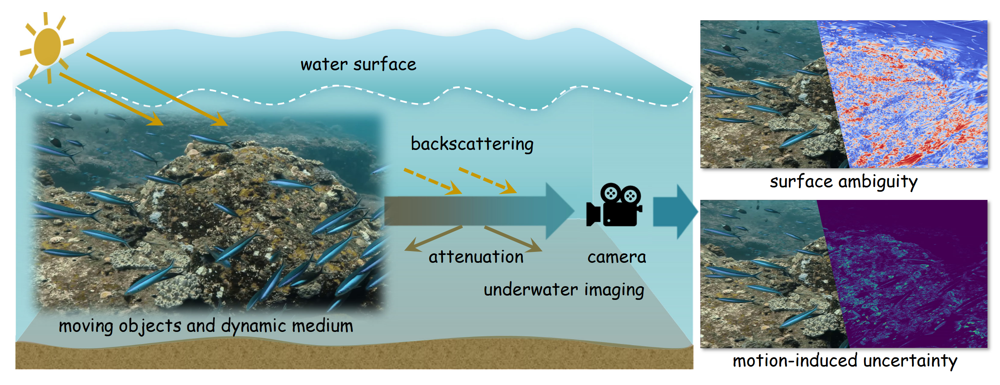
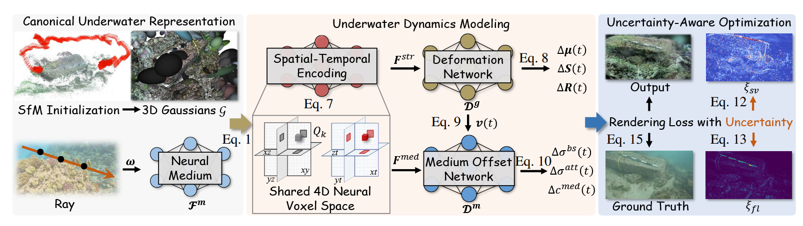

Overview
Abstract
Underwater 3D reconstruction remains challenging due to the intricate interplay between light scattering and environment dynamics. While existing methods yield plausible reconstruction with rigid scene assumptions, they struggle to capture temporal dynamics and remain sensitive to observation noise. In this work, we propose an Uncertainty-aware Dynamic Field (UDF) that jointly represents underwater structure and view-dependent medium over time. A canonical underwater representation is initialized using a set of 3D Gaussians embedded in a volumetric medium field. Then we map this representation into a 4D neural voxel space and encode spatial-temporal features by querying the voxels. Based on these features, a deformation network and a medium offset network are proposed to model transformations of Gaussians and time-conditioned updates to medium properties, respectively. To address input-dependent noise, we model per-pixel uncertainty guided by surface-view radiance ambiguity and inter-frame scene flow inconsistency. This uncertainty is incorporated into the rendering loss to suppress the noise from low-confidence observations during training. Experiments on both controlled and in-the-wild underwater datasets demonstrate our method achieves both high-quality reconstruction and novel view synthesis.
Pipeline
Qualitative Results

Acknowledgements
This work was supported by Zhejiang Provincial Natural Science Foundation of China (No. LR26F020002), Fundamental Research Funds for the Central Universities (226-2025-00057), and CIE-Tencent Robotics XRhino-Bird Focused Research Program.
BibTeX
@inproceedings{liu2026udf,
title={Uncertainty-Aware 3D Reconstruction for Dynamic Underwater Scenes},
author={Liu, Rui and Duan, Zhibo and Gao, Jianzhe and Yang, Yi and Wang, Wenguan},
booktitle={International Conference on Learning Representations (ICLR)},
year={2026}
}